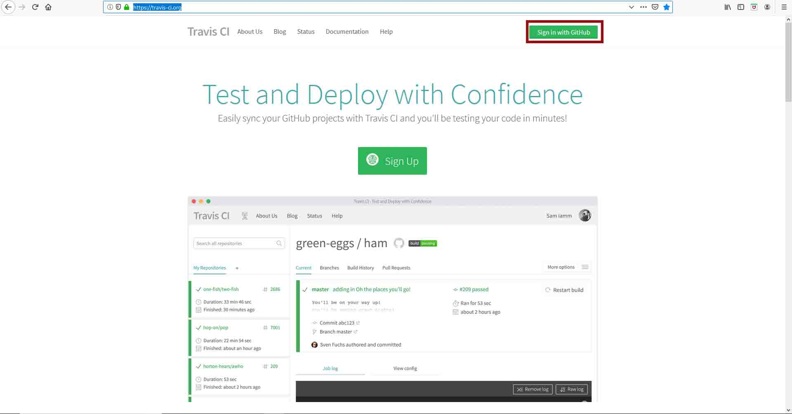
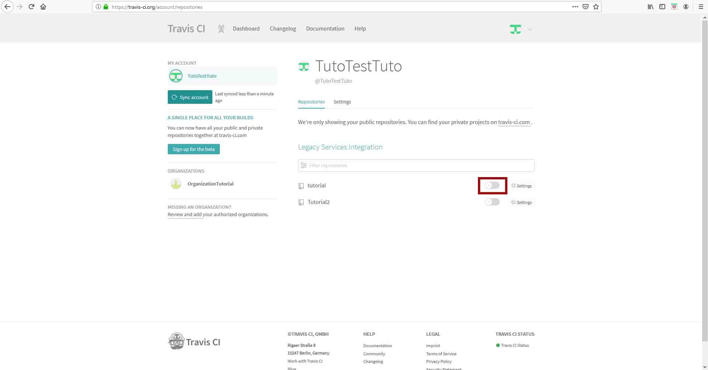
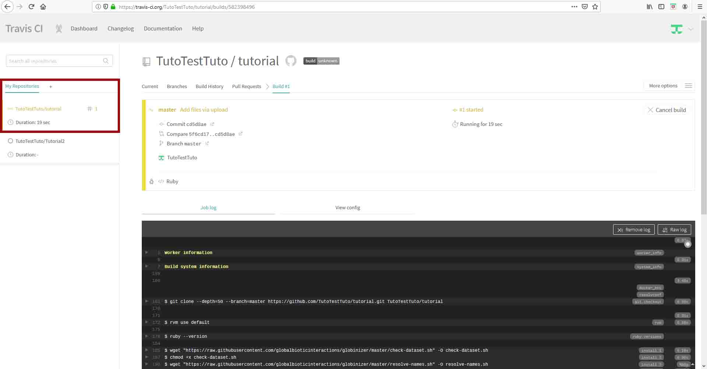

Control de calidad de datos con Travis.org
Tutorial Travis
- Asegurate de tener cargado en tu repositorio de GitHub el archivo .travis.yml
- Visita la pagina de igreso de Travis.org.
- Ingresa (sing in with GitHub) con tu cuenta personal/administrador de GitHub. 
- Autoriza a Travis ("Grant") que se conecte a tu cueta de tu organización de GitHub.

- Activa el repositorio que quieres analizar. 
- Selecciona el repositorio de interes.

- Corre el programa
- Si todas tus interacciones tiene el formato correcto obtenras una medalla verde, de lo contrario será amarilla.
- Los trabajadores de Travis te informaran en que parte está el problema para que puedas rastrearlo y solucionarlo.
- Cuando tus datos tengan la medalla verde están en el formato correcto para que GloBI pueda leerlos ¡Felicidades!
Atras.